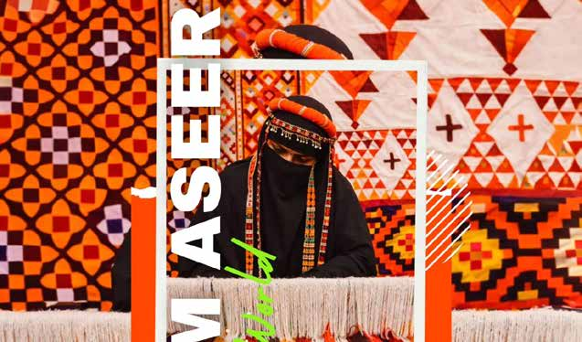
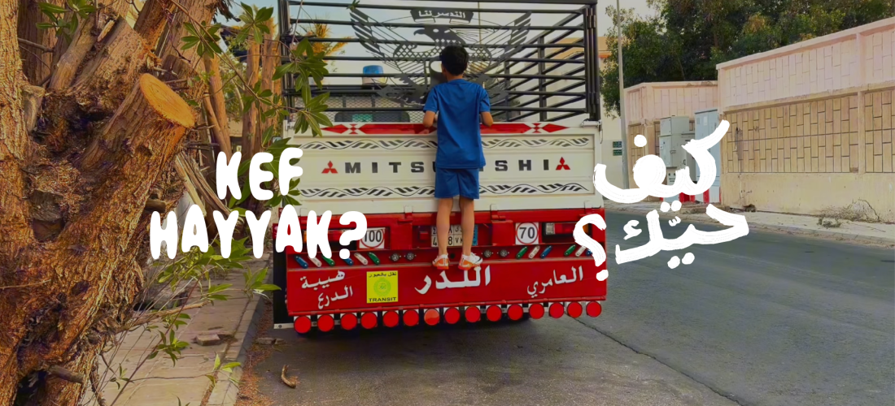
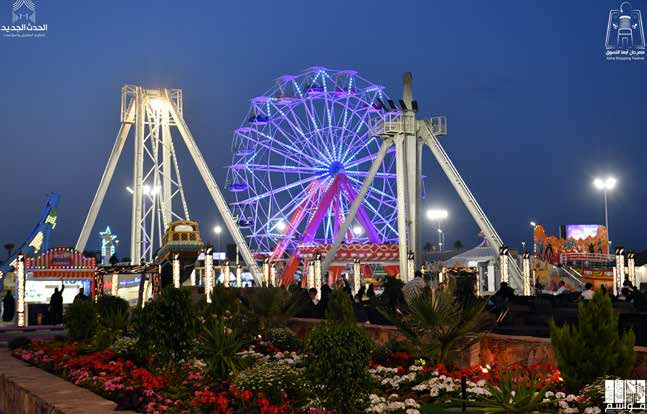
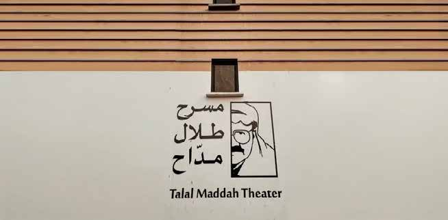
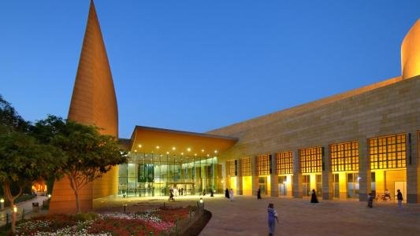
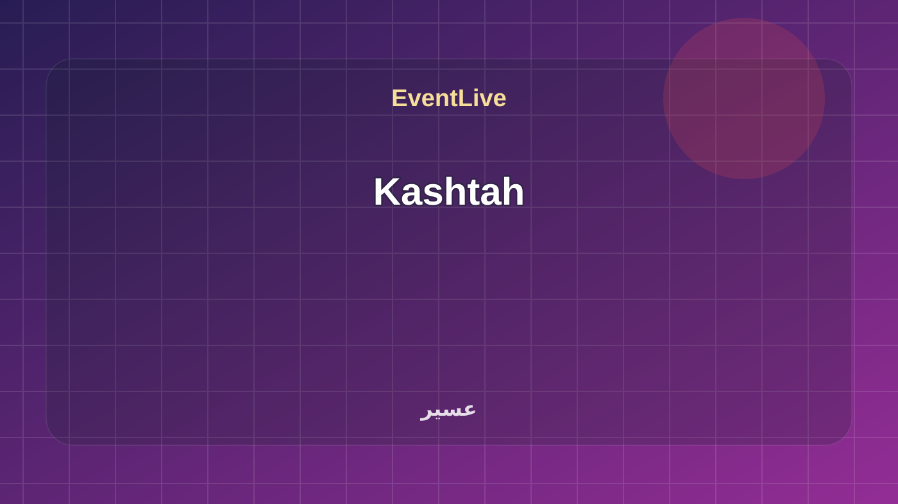
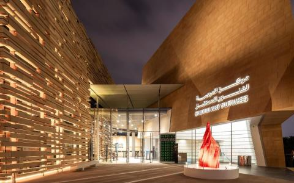

منطقة مشجعي كأس العالم 2026
عيش أجواء منطقة مشجعي كأس العالم 2026، حيث تجتمع متعة متابعة المباريات على شاشات عرض ضخمة مع أنشطة تفاعلية، ومطاعم، ومقاهٍ تناسب جميع أفراد العائلة.
تفاصيل الحضوردليل فعاليات السعودية هذا الشهر، يجمع المؤتمرات والمعارض والدورات والفعاليات العامة مع تحديثات EventLive الدورية.
عيش أجواء منطقة مشجعي كأس العالم 2026، حيث تجتمع متعة متابعة المباريات على شاشات عرض ضخمة مع أنشطة تفاعلية، ومطاعم، ومقاهٍ تناسب جميع أفراد العائلة.
تفاصيل الحضور
تابعوا مباريات كأس العالم في منطقة المشجعين وسط أجواء كروية استثنائية، وفعاليات متنوعة مع العائلة وااصدقاء في جدة بروميناد.
تفاصيل الحضور
فعالية تنقل أجواء كأس العالم إلى عبادي الجوهر أرينا تجمع شاشات عملاقة، ومناطق تفاعلية، جوائز، وغيرها. عيشوا المونديال مع بنش مارك - عبادي الجوهر أرينا ضمن رياضة وفعاليات جماهيرية في جدة. تبدأ الفعالية ١١/٠٦/٢٠٢٦، ١٢:٠٠ ص وتنتهي ١٩/٠٧/٢٠٢٦، ١١:٥٩ م حسب البيانات المتاحة. تعرض الصفحة وقت الفعالية وموقعها ومصدرها وروابط التقويم والاتجاهات عند توفرها. المصدر: Visit Saudi Summer Calendar PDF.
تفاصيل الحضور
The Diriyah Biennale Foundation, in partnership with Coca-Cola, presents the Coca-Cola Fan Zone at JAX District, offering football fans a vibrant public viewing experience of the FIFA World Cup 2026™. Hosted within JAX District’s iconic warehouses, the fan zone features large cinema-grade screens, dedicated viewing galleries, and coverage of Saudi Arabia’s matches alongside key global fixtures through to the final. Visitors can also enjoy e-gaming zones, interactive football challenges, family areas, and curated entertainment activities, creating an immersive destination where sport, culture, and community come together in Riyadh. Book Now
تفاصيل الحضور
Live It (Eshha) is one of Riyadh’s largest sports entertainment and family fan zones during the FIFA World Cup 2026. Designed to capture the excitement of the tournament, the venue features giant match screens, live entertainment, gaming zones, and interactive experiences for football fans of all ages. Book Now
تفاصيل الحضور
Sikkat Al-Atimah (Street Food) Fan Zone offers a unique FIFA World Cup 2026 viewing experience in the heart of Historic Riyadh, within the Qasr Al-Hukm District near Souq Al Zal. Combining the excitement of live matches with the charm of one of the city's most iconic heritage destinations, the fan zone features dedicated viewing areas, a giant screen, immersive audio-visual experiences, and family-friendly entertainment. Visitors can also enjoy a variety of food and beverage offerings, photo opportunities, and convenient access via Riyadh's public transport and metro network.
تفاصيل الحضور
The Solitaire Fan Zone brings football fans together for an immersive FIFA World Cup 2026 viewing experience, featuring live match screenings in a stadium-inspired atmosphere. Visitors can enjoy a variety of entertainment activities, interactive challenges, and experiences throughout the tournament. The fan zone also features a diverse selection of brands across food and beverages, perfumes, fashion, and gaming, creating a vibrant destination for football enthusiasts, friends, and families alike. Book Now
تفاصيل الحضور
Experience FIFA World Cup 2026 matches live at Kimpton KAFD, where a giant screen by the pool creates a vibrant atmosphere in the heart of KAFD. Guests can enjoy live match screenings alongside a selection of food and beverages, offering a distinctive setting to gather with friends and family and enjoy the excitement of the tournament. The experience extends beyond matchdays with lifestyle and hospitality programming designed to keep the summer football spirit alive, allowing guests to continue enjoying the atmosphere, entertainment, and social experiences throughout the season. Book Now
تفاصيل الحضور
JAX District in Diriyah will host the Coca-Cola Fan Zone from June 11 to July 19. The fan zone is a dedicated destination for football fans, bringing together live match screenings, entertainment activities, and interactive experiences in an atmosphere suitable for all ages. The venue gives visitors the opportunity to enjoy the excitement of the tournament beyond the stadiums, with spaces designed to make every match a shared experience filled with energy and support.
تفاصيل الحضور
Experience the FIFA World Cup 2026 at Ruh Space, a premium fan destination located in VIA Riyadh. Designed for football enthusiasts, the venue offers live match screenings in an upscale setting that combines the excitement of the tournament with exceptional hospitality. Guests can enjoy curated dining experiences from renowned restaurants, including Madeo and Ferdi, alongside a range of tailored experiences that create a memorable World Cup atmosphere in the heart of Riyadh. Book Now
تفاصيل الحضور
Laysen Valley Fan Zone offers football fans a lively destination to enjoy FIFA World Cup 2026 matches live on giant screens alongside fellow supporters. Designed to capture the excitement of the tournament, the fan zone combines live match viewing with a vibrant atmosphere and shared fan experiences. Visitors can also enjoy a variety of food and beverage options, entertainment activities, and a welcoming environment, making it an ideal destination for friends, families, and football enthusiasts throughout the tournament. Book Now
تفاصيل الحضور
تقدّم بوابة المونديال في جدة تجربة جماهيرية متكاملة لمشاهدة مباريات كأس العالم على شاشات عملاقة، مع مطاعم، وألعاب، ومنطقة أطفال، وفعاليات للعائات ومحبي كرة القدم.
تفاصيل الحضور
مهرجان مفتوح متعدد الأنماط في أبها يجمع بين التسوق، والمطاعم العالمية، والموسيقى الحية، والتجارب التفاعلية الغامرة. مهرجان صوت أبها SAF ضمن ترفيه وعائلات في عسير. تبدأ الفعالية ١٥/٠٦/٢٠٢٦، ١٢:٠٠ ص وتنتهي ١٥/٠٩/٢٠٢٦، ١١:٥٩ م حسب البيانات المتاحة. تعرض الصفحة وقت الفعالية وموقعها ومصدرها وروابط التقويم والاتجاهات عند توفرها. المصدر: Visit Saudi Summer Calendar PDF.
تفاصيل الحضور
استكشف معرضاً غامراً يجمع بين الحرف النسيجية التقليدية والفن المعاصر، في رؤية فنية تمزج بين الأصالة والتجريب وتربط الماضي بالحاضر عبر رموز مستوحاة من التراث وااساطير.
تفاصيل الحضور
Join us for the screenings of the third edition of “Kef Hayyak?” cohort’s films! “Kef Hayyak?” is a unique documentary filmmaking challenge that invites aspiring filmmakers to capture the essence of their neighborhoods in Jeddah through their own lens—using only their phones. Building on the success of its first two editions, the programme launched an open call for its third edition in December 2025, selecting 13 projects for development based on the quality and originality of their creative proposals.
تفاصيل الحضور
فعالية ريفية تفاعلية تتيح للزوار زراعة الشتلات، وقطف الفواكه، وتذوق العصائر، وإعداد خبز التنور، والتصوير بالزي التراثي. مزرعة أعناب ضمن رياضة وفعاليات جماهيرية في عسير. تبدأ الفعالية ٢٤/٠٦/٢٠٢٦، ١٢:٠٠ ص وتنتهي ٠١/٠٩/٢٠٢٦، ١١:٥٩ م حسب البيانات المتاحة. تعرض الصفحة وقت الفعالية وموقعها ومصدرها وروابط التقويم والاتجاهات عند توفرها. المصدر: Visit Saudi Summer Calendar PDF.
تفاصيل الحضور
فعالية تجمع التسوق والترفيه، وتضم صالات تسوق لمنتجات محلية، وخليجية، ودولية، ومدينة ماه متكاملة، وفعاليات ترفيهية متنوعة لمختلف الأعمار.
تفاصيل الحضورفعالية تجمع أبرز العلامات التجارية وخبراء العطور لتقديم تجربة فاخرة لعشاق العطور الشرقية والعالمية، تشمل إطاقات حصرية، وتجارب تفاعلية، وفرص تسوق مباشرة للزوار.
تفاصيل الحضور
سلسلة حفلات موسيقية تجمع فنانين من الخليج والعالم العربي في أمسيات تمزج بين الطرب الأصيل، واايقاعات الحديثة في مسرح طال مداح.
تفاصيل الحضور
A season filled with culture, events, and diverse experiences المصدر الرسمي: Visit Saudi. Aseer Season ضمن رياضة وفعاليات جماهيرية في عسير. تبدأ الفعالية ٢٥/٠٦/٢٠٢٦، ٩:٠٠ ص وتنتهي ٠١/٠٩/٢٠٢٦، ٦:٠٠ م حسب البيانات المتاحة. تعرض الصفحة وقت الفعالية وموقعها ومصدرها وروابط التقويم والاتجاهات عند توفرها. المصدر: Visit Saudi Calendar.
تفاصيل الحضور
Summer Wonders is the National Museum's summer program, offering interactive learning experiences for children and families through creative workshops, storytelling, games, hands-on activities, and live musical performances. The program encourages participants to explore history, culture, design, and technology through engaging activities that inspire creativity and discovery. Visitors can enjoy a variety of experiences, including family challenges, interactive exhibitions, craft workshops, shadow storytelling, educational games, and music evenings. Program Highlights Interactive family activities and storytelling experiences. Creative workshops for all ages. Educational games and hands-on learning. Musical performances every Friday. Interactive installations and museum exploration activities. Design, creativity, and technology experiences. Workshops Creative workshops are held every Thursday and Friday at The Studio, with multiple sessions available throughout the day. Activities are suitable for all ages. Register Now Visiting Hours Saturday–Wednesday: 9:00 AM – 7:00 PM Thursday: 9:00 AM – 10:00 PM Friday: 2:00 PM – 10:00 PM Sunday: Closed
تفاصيل الحضور
Kashtah brings the charm of a traditional outdoor gathering to Al-Hadabah Park in Abha, creating a family-friendly destination where nature, adventure, and relaxation come together. المصدر الرسمي: Visit Saudi.
تفاصيل الحضور
Art Futures Summer Camp for Arabic-Speaking Teens is a three-week immersive programme hosted by Diriyah Art Futures (DAF), the MENA region’s first centre dedicated to New Media Arts. Designed for Arabic-speaking teens aged 14–18, the camp offers an in-depth introduction to digital art practices in a dynamic and supportive environment. Under the 2026 theme, “Digital Art and Portraiture,” participants explore new ways of representing identity in the digital age, questioning how individuals are portrayed when faces become data and images circulate beyond physical presence. The programme combines creative experimentation with foundational technical skills, including Fab Lab practices and digital studio portraiture. Throughout the camp, participants work closely with industry specialists and creative mentors, culminating in a collaborative exhibition produced with DAF’s curatorial and exhibition teams to showcase their work. Applications are officially open, with aspiring young creatives in Riyadh able to apply until Sunday, June 7.
تفاصيل الحضور
تقدّم بيوني تجربة متكاملة تمزج عبق التراث بروح عصرية، مصما مة بأحجار وأخشاب تتجاوز 70 عاماً، مع شاات، ونوافير، ومسطحاتٍ خضراء، وجلسات خارجية، ومنطقة ألعاب لاطفال.
تفاصيل الحضورنعم، تعتمد على الكتالوج الحالي وتعرض أقرب فعاليات الشهر بناء على وقت البناء.
لا، هذه الصفحة تركز على الفعاليات النشطة والقادمة، بينما تبقى الفعاليات المنتهية في صفحاتها الطبيعية.
يمكن الانتقال من البطاقة إلى صفحة الفعالية أو فتح صفحة المدن للوصول إلى كل مدينة.